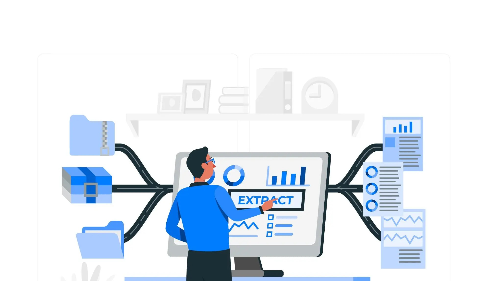

I have a great interest in utilising data to find patterns or trends that aid decision making and can lead to productivity and profitability.
In this portfolio, I showcase my analytical skills using SQL, Excel, Tableau, Power BI, SPSS and WEKA .

The dataset in this project was collected from codewithmosh.com. The dataset consists of HR, Inventory, Invoicing and Store databases. In this SQL project, I explored and cleaned the databases to get the datasets in a better structure for further manipulation and insights.

This SQL project demonstrated Data Definition Language (DDL), Data Manipulation Language (DML) and Data Query Language (DQL) skills in managing, extracting and updating databases. This project was divided into 5 categories reflecting loyalty points, customer information, orders, products and shipping information for easy interaction and understanding of the databases.

This project uses Excel Pivot tables and charts to examine the dataset of a vehicle insurance company. After careful analysis, a few insights such as most fraudulent claims were made by young adults (aged 25 – 35), and most of these claims occurred in urban areas without witnesses and police reports. I recommend that the company ensures more evidence of claims from this age group is provided upon complaint. The analysis also provides more interesting insights that can be reviewed through the link.

This project uses Excel formulas to run a simulation and calculate the retention rate of customers with assumed parameters. The simulation shows that the CLV, which is the revenue earned from the customers, is greater than the Gross Lifetime Value (GLV), and the probability of retaining customers is 88%. The probability of a customer bringing revenue is also greater than the acquisition cost. The analysis reflects that the company will generate more revenue from a great percentage of retained customers if the given retention rate and the discount rate are applied. The analysis reflects that the company will generate more revenue from a great percentage of retained customers and it is a profitable business.

This project utilises Excel for Time Series Exploration. The dataset was decomposed to find the trend and seasonality. It was further divided into in-sample and out-sample to determine the naïve, exponential smoothing and linear exponential smoothing (LES) forecasting on the datasets. The analysis illustrates that the results for Linear Exponential Smoothing forecasting generated the best accuracy for forecasting.

This project used Tableau to analyse and visualise the sales performance of a retail company. It can be observed from the dashboard created that the company was running at a loss in the first half of 2015 and had a fluctuating profit till it attained its maximum profit in June 2016 and began to drop. The company also makes the most profit from young adults (aged 29 – 47). Based on gender analysis, the company is doing well, reaching both genders. Still, it needs a good means of advertisement to communicate with the elderly and old to increase the customer base and profit in that age group. Lastly, the regional analysis shows that the company needs more something in the northern states.
The dataset used was derived from my time at 10Alytics.
.

This project analyses the company’s sales performance from 2015 to 2017 across the three continents (Europe, North America and the Pacific) it operates.
The analysis provided the profit based on several factors such as gender, income class, product category and region. It can be observed from the visualisation, the subcategories making the most profit, which gender mostly benefits the company and the quarter of the year the company made its most revenue, amongst other valuable insights.